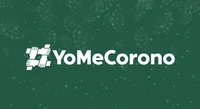
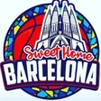
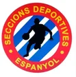
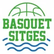

1r Torneig · Abril 2023
El Bàsquet fa Salut
1.018 € Recaptat
- Entitat beneficiària
-

Fundació #YoMeCorono / Fundació Lluita contra les Infeccions - Causa
- Investigació contra la COVID-19, vacunes, tractaments, COVID persistent i vigilància genòmica.
- Equips participants
-

Sweet Home Barcelona (ex-jugadors F.C. Barcelona)- Veterans Joventut Badalona

S.D. Espanyol (Seccions Deportives)
C.B. Sitges
- Lloc
- Pavelló Pins Vens, Sitges Abril 2023
"Hem de deixar de cometre els mateixos errors. Hem d'invertir per prevenir malalties i ajudar la humanitat a estar un pas per davant."
Galeria de fotos 2023